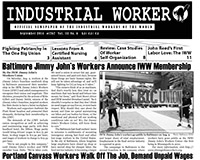

Submitted on Mon, 09/08/2014 - 10:04am
 The IWW Survey & Research Committee (part of the Organizing Department Board) has just launched our 2014 member survey. We hope you can take 5-10 minutes of your time to complete this survey, and to share it with as many of your fellow workers as possible. Paper copies are also available upon request. The survey can be found at: http://bit.ly/Yg2SwA
The IWW Survey & Research Committee (part of the Organizing Department Board) has just launched our 2014 member survey. We hope you can take 5-10 minutes of your time to complete this survey, and to share it with as many of your fellow workers as possible. Paper copies are also available upon request. The survey can be found at: http://bit.ly/Yg2SwA
The information you share with us will be vital in moving forward with organizing efforts around the world. This year, we are especially focused on understanding where fellow workers are organizing, as well as past efforts and future goals. The more comprehensive this survey is (i.e. the more people who respond!) the better we will be able to plan strategically and provide necessary trainings and resources. If you have any questions, concerns, or feedback about the survey, or are otherwise interested in the work of the SRC, please contact us at src@lists.iww.org.
For the One Big Union,
Submitted on Thu, 09/04/2014 - 11:54am

Headlines:
- Baltimore Jimmy John’s Workers Announce IWW Membership
- Portland Canvass Workers Walk Off The Job, Demand Unpaid Wages
- Work People’s College Europe: A Huge Success
Features:
- Fighting Patriarchy In The One Big Union
- Review: Case Studies Of Worker Self-Organization
- John Reed’s First Labor Love: The IWW
Download a Free PDF of this issue.
Submitted on Mon, 09/01/2014 - 12:06pm
 Starting on Friday, August 22nd, IWW workers at a UPS sorting facility in Minneapolis began organizing against their and their coworkers' labor supporting the ongoing police violence against the population of Ferguson, Missouri in the aftermath of the murder of Michael Brown, an unarmed 18-year-old black man. In a series of actions aimed at a local company shipping questionable shooting-range targets to law enforcement agencies nationwide, workers stood up to the idea that they should have to support racism, brutality, or murder in order to make ends meet. This action was organized in conjunction with, and under the banner of Screw Ups, a rank-and-file newsletter published by IWW workers at the facility for the past year.
Starting on Friday, August 22nd, IWW workers at a UPS sorting facility in Minneapolis began organizing against their and their coworkers' labor supporting the ongoing police violence against the population of Ferguson, Missouri in the aftermath of the murder of Michael Brown, an unarmed 18-year-old black man. In a series of actions aimed at a local company shipping questionable shooting-range targets to law enforcement agencies nationwide, workers stood up to the idea that they should have to support racism, brutality, or murder in order to make ends meet. This action was organized in conjunction with, and under the banner of Screw Ups, a rank-and-file newsletter published by IWW workers at the facility for the past year.
Submitted on Sun, 08/31/2014 - 1:52pm
 On Labor Day - Monday, Sept. 1st - workers at a Jimmy Johns franchise in Baltimore, Maryland are taking action with their union - the IWW Jimmy Johns Workers Union! They will be flyering outside of their store today in order to press for their demands. Lets give their action a little more oomph and show the bosses that we union members stick together! We will be in front of the store from noon (12:00) EST until 2:00 EST, lets keep the phones ringing! A couple of ground rules: no threatening, try to avoid profanity, and most importantly call often!
On Labor Day - Monday, Sept. 1st - workers at a Jimmy Johns franchise in Baltimore, Maryland are taking action with their union - the IWW Jimmy Johns Workers Union! They will be flyering outside of their store today in order to press for their demands. Lets give their action a little more oomph and show the bosses that we union members stick together! We will be in front of the store from noon (12:00) EST until 2:00 EST, lets keep the phones ringing! A couple of ground rules: no threatening, try to avoid profanity, and most importantly call often!
Here are the numbers to call:
Mike Gillett (franchise owner): 410-404-5684
Daniel Dolch (franchise owner): 443-797-2472
And here is what you should say (feel free to add more though!):
Submitted on Tue, 08/26/2014 - 9:46am
Please sign and share our petition calling on Starbucks to provide fair schedules for their employees!
 The IWW Starbucks Workers Union (SWU) has been working with the media since August 10th to bring attention to scheduling practices in the Food and Retail Industry, and Starbucks in particular.
The IWW Starbucks Workers Union (SWU) has been working with the media since August 10th to bring attention to scheduling practices in the Food and Retail Industry, and Starbucks in particular.